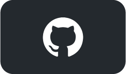
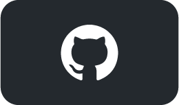

Ryan
Semmler
Back-end Software Engineer
 


I'm an experienced back-end engineer specializing in Python and Java.
I've been coding on my own for years, and I've been lucky enough to make it my career!
A few examples of personal projects are highlighted below.